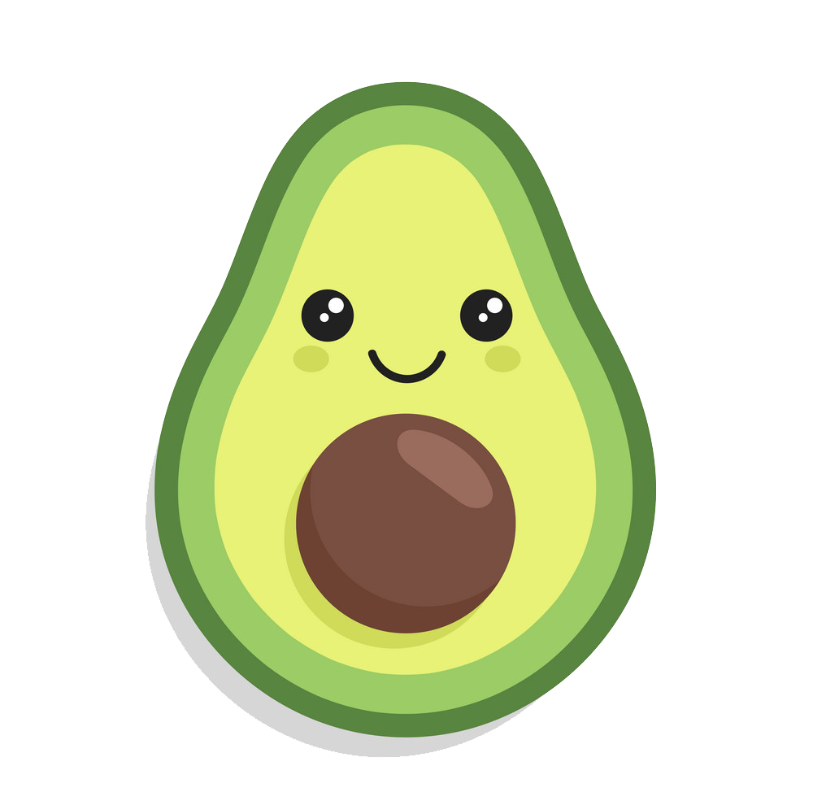
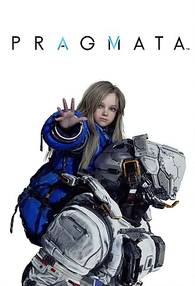
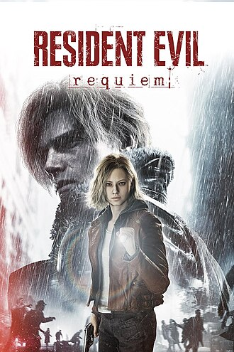
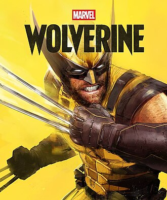
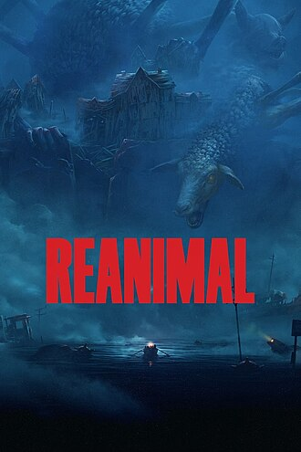
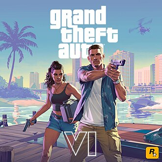

game-avocado

PragmataИгрок управляет космонавтом Хью и андроидом Дианой от третьего лица, пока они ищут способ сбежать с лунной исследовательской станции, кишащей враждебными роботами с искусственным интеллектом. Хью имеет в распоряжении различное огнестрельное оружие, а также реактивный ранец, позволяющий уклоняться от атак и забираться на высокие поверхности. Хотя броня роботов пуленепробиваема, Диана может взломать систему защиты у робота и пометить его уязвимое место, которое Хью затем может атаковать[2]. Во время взлома, игрок должен вести курсор по квадратной сетке пока не достигнет специальной ячейки, попутно избегая препятствий и активируя бонусы, которые могут дать дополнительные боевые преимущества, такие как увеличение урона от оружия[3]. Взлом роботов происходит в реальном времени, из-за чего Хью необходимо уклоняться от атак роботов во время каждого взлома[4].

Resident Evil 9Геймплей чередуется между Грейс и Леоном. Разделы Грейс продолжают игровой процесс в жанре survival horror из Resident Evil 7: Biohazard (2017) и Resident Evil Village. Секции Леона ориентированы на экшен, как в таких играх, как Resident Evil 4 (2005). Оба персонажа можно играть как от первого лица, так и от третьего лица. Разделы Grace сосредоточены на survival horror с ограниченными ресурсами, что требует от игрока более осторожности. [3] Её игровой процесс строится вокруг уклонения от угроз, решения головоломок и управления ограниченными слотами инвентаря с разными ящиками для хранения предметов. Секции Леона сосредоточены на экшене, включая различные огнестрельные оружия, устранения и более обильные ресурсы для нейтрализации зомби-врагов. [2] В дополнение к своему оружию ближнего боя с топором с ограниченной прочностью для парирования вражеских атак, Леон также может подбирать вражеское оружие и использовать его против них.

Wolverineэто грядущая приключенческая игра в жанре экшена, разработанная Insomniac Games и изданная Sony Interactive Entertainment. Основанный на персонаже Marvel Comics Росомахе, он вдохновлён давней мифологией комиксов, а также происходил из различных адаптаций в других медиа. Marvel's Wolverine — это самостоятельная часть серии Marvel's Spider-Man, рассказывающая оригинальную, самостоятельную историю, разделённую с другими играми Marvel от Insomniac.Гейплей до сих пор не известен

ReanimalReanimal представляет собой игру в жанрах survival horror, стелс и кинематографического платформера. Сюжет повествует о брате и сестре, пытающихся выбраться из кошмарной версии своего дома и спасти трёх друзей[1]. Героям необходимо работать сообща, исследовать острова, скрываться от мутировавших животных и решать различные головоломки, связанные с окружающей средой. По мере прохождения игроки получают лодку, позволяющую исследовать локации за пределами основного маршрута в нелинейном порядке[2]. Игра поддерживает как одиночный режим, так и кооперативное прохождение для двух игроков — онлайн или локально. В одиночной игре вторым персонажем управляет искусственный интеллект.

GTA VIGrand Theft Auto VI (сокр. GTA VI, GTA 6) — будущая компьютерная игра в жанре action-adventure с открытым миром, разрабатываемая компанией Rockstar Games. Станет шестнадцатой по счёту и восьмой крупной игрой в серии Grand Theft Auto. Rockstar подтвердила разработку игры в феврале 2022 года, после многих лет спекуляций и слухов. В сентябре 2022 года произошла утечка данных, из-за чего в сеть попало большое количество видеоматериалов о новой игре. Игра была представлена официально 4 декабря 2023 года.